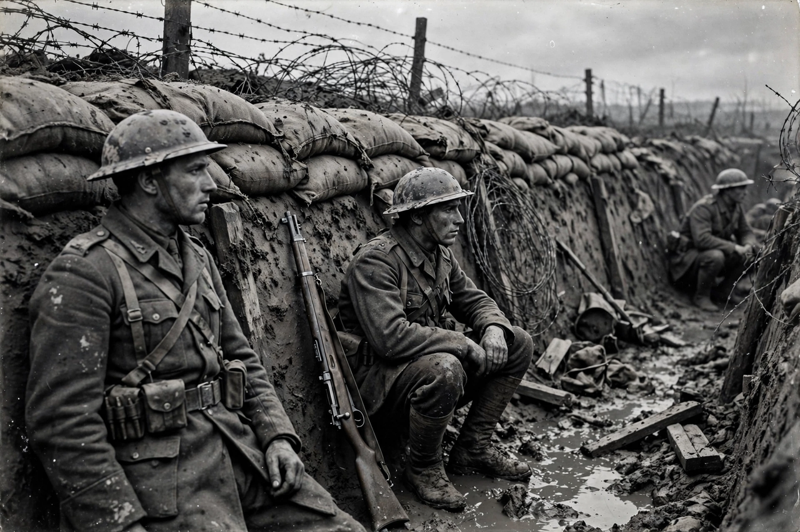

| Date | 28 July 1914 – 11 November 1918 |
|---|---|
| Location | Europe, Africa, the Middle East, Asia and the Pacific |
| Result | Allied victory; collapse of the German, Austro-Hungarian, Ottoman and Russian empires |
| Belligerents | Allies (France, Britain, Russia, Italy, United States and others) vs. Central Powers (Germany, Austria-Hungary, Ottoman Empire, Bulgaria) |
| Casualties | Roughly 9–10 million military dead; millions of civilian deaths |

World War I, also known as the First World War or the Great War, was a global conflict that began on 28 July 1914 and lasted until 11 November 1918. It involved most of the world's great powers, assembled in two opposing alliances, and mobilised more than 70 million military personnel.
The immediate trigger was the assassination of Archduke Franz Ferdinand of Austria by the Bosnian Serb student Gavrilo Princip in Sarajevo on 28 June 1914. Austria-Hungary's ultimatum to Serbia, backed by Germany's "blank cheque", set off a chain of alliance commitments and mobilisation timetables: Austria-Hungary declared war on Serbia, Germany on Russia and France, and Britain on Germany after the invasion of neutral Belgium.
Germany's Schlieffen Plan failed at the First Battle of the Marne (September 1914), and the Western Front settled into trench warfare — a line of fortifications from the North Sea to Switzerland where offensives at Verdun, the Somme and Passchendaele cost hundreds of thousands of lives for gains measured in metres. New weapons — machine guns, poison gas, tanks, aircraft and submarines — transformed the battlefield. The Eastern Front was more mobile; Russia's collapse in 1917, accelerated by revolution, freed German divisions for a final western offensive in 1918. The entry of the United States in 1917, the failure of the German spring offensive, and the Allied Hundred Days Offensive broke German resistance. Armistice took effect at 11 a.m. on 11 November 1918.
The Treaty of Versailles (1919) imposed reparations and territorial losses on Germany and assigned it responsibility for the war, fuelling grievances later exploited by the movement that created Nazi Germany. Four empires dissolved; new states emerged across Europe and the Middle East; the League of Nations was founded; and the war's demographic and psychological scars shaped the politics of the following generation. Total deaths are commonly estimated at 15–22 million.